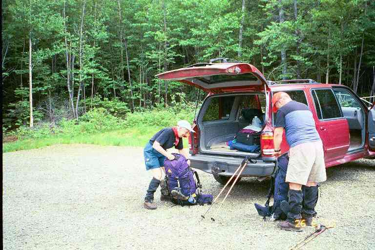
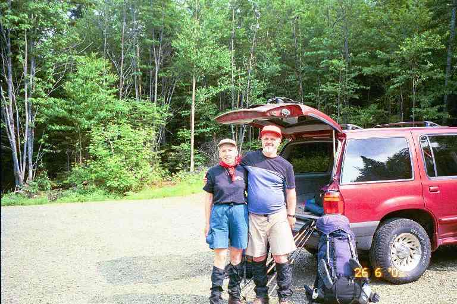
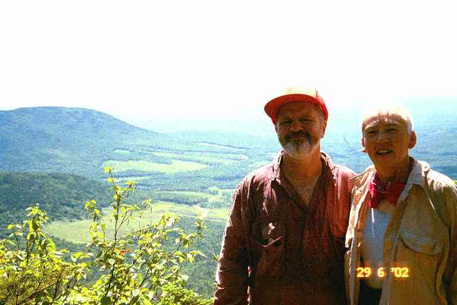
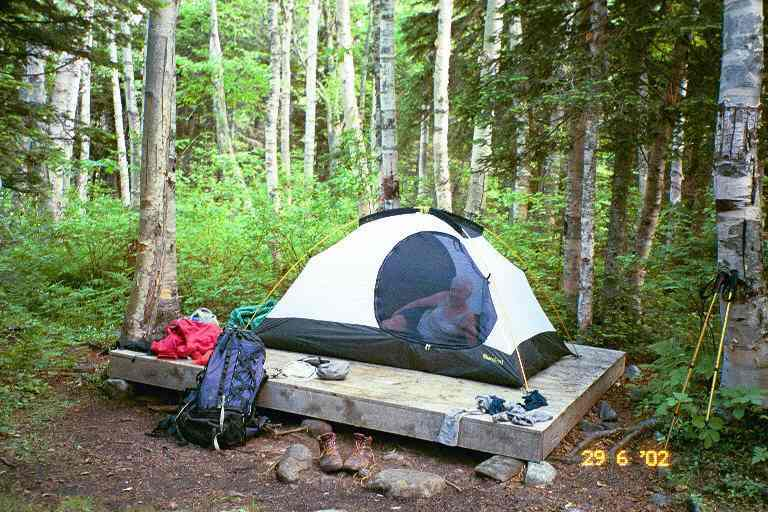

The summer of 2002 was our third attempt at completing our 1999 hike of the Appalachian Trail. In 2000 we hiked for 3 weeks in the Whites and the Mahoosucs and in 2001 we did a short 5 days in Maine.
The 2001 attempt had been a disappointment and we had spent much time since then trying to figure out what had gone wrong. In retrospect, it seemed clear that I had an anxiety attack. It likely came about as a reaction to the fatigue from slackpacking the first 3 days of our hike. Hiking 33 miles over mountains in extreme heat had been a very tough way to start the hike. The resultant fatigue had weakened me and had raised doubt in my mind about my ability to do the 30 miles over Saddleback and the string of high mountains in the remote area between Rangeley and Stratton. My anxiety forced us to abandon our hike.
Over the winter, I worried that my anxiety would again affect me in 2002 but I was determined to conquer it, so MA drew up her plans for the 2002 hike. We stayed very active by joining an Aerobic/Tae-Bo class, taking dancing lessons and by cross-country skiing. When June rolled around, we were in better shape than in any of the previous years.
Our friends Betty and Bill Mayo volunteered to drive us to the trail this year, as they had done in 2000. We left Moncton early in the morning of June 26 and arrived at the trailhead at Rangeley Maine around 3:30.PM. Here are two pictures (Picture#1 & Picture#2 ) taken in the parking lot as we prepared to leave. I guess the tightness of my T-shirt gives the impression that I was not in shape.


We hit the trail around 3:50 PM, aiming for Piazza Rock Lean-to at the base of Saddleback. This was the shelter at which we had stayed on our last day, the previous year. We hiked the wide, well traveled 1.8 mile section in a little over an hour. The skies were threatening as we hiked and we were glad to arrive before the storm started.. (All the shelters in Maine are called Lean-tos but I kept referring to them as shelters).
As the rain began, the caretaker, Ed, showed up. We found out that he had thru hiked in 1999 and his trail name was ALL DOWNHILL FROM HERE. We had not met him during our hike but we exchanged trail stories. We were joined by a man and his 10 year old son. They were going in the other direction and wanted to get to the road that evening. They stood under the shelter's overhanging roof, putting on their pack covers and rain gear and talking about their 4 day trip over the mountains. As I was still worried about this 30 mile section, I asked them a few pointed questions about the terrain. They mentioned the height of the mountains and the tough climbs, but they had experienced no problems. The rain began to fall hard and we found ourselves in the middle of a severe thunder storm.
Ed asked the two visitors about a day hiking group that had gone up Saddleback late that afternoon, with no visible supplies, water or extra clothes. There had been a number of children in the group and he was concerned that they would be on the summit at this time. The father and son had passed them some time before but had no other information. The father and son left during a brief lull in the storm.
The storm continued and we moved our stuff over to the other end of the shelter when we noticed leaks in the roof. Over the next little while, four southbound (SOBO) thru hikers arrived soaking wet. They were a couple called the BEARS (GENTLE BEAR and CARE BEAR) and two guys named FIREFLY and DOCTOR FEELGOOD. They were not wearing rain gear and I felt cold for them. But I always feel cool when it is damp out and anyway the temperature had been in the 80's and the exercise would have kept them warm. They soon had wet clothing and gear hanging from every available hook and nail across the front of the shelter. As I watched them setting out their sleeping pads and bags, and as I listened to their banter as they did their chores, I quickly felt back at homeon the trail.
They took out their stoves and food and began preparing their meals, all the while talking about their food choices, their appetite, their next re-supply point, etc. The BEARS took out a jar of Fluff (melted marshmallow I think) and explained how they use it as their sweetener and also for quick energy. The main advantage was the fact that it would not go bad in their pack. They told of us about their trail names (DOCTOR FEELGOOD got his when he had given a pain killer to a suffering hiker) and about their hike so far. They updated themselves by reading the shelter's register and exchanging information about other thru hikers nearby. All this seemed very familiar and comfortable to us as we sat on the edge of the shelter preparing our meal and doing our chores.
Ed collected our $6 fee and asked the others about the day hikers. They had seen them near the top of the mountain just before the storm and had found out that they would be descending by a side trail. We all agreed that they had been foolish to be on the mountain so late in the day with little supplies during a storm, and we all agreed that you have to be prepared for any eventuality when you hike in the mountains. However, it was late June so they had lots of daylight. We had to assume they got down all right, but we never heard more about them.
I was a little concerned about the next day's hike. The profile map looked very intimidating with a 9 mile hike over three high and steep mountain peaks to the next shelter. However, our plan was to take our time so I was feeling pretty confident. As we went about our evening chores, we felt very relaxed, likely due to the presence of thru-hikers and because we were familiar with this shelter from the previous year. We got into our sleeping bags before dark, as we always seemed to do on the trail, and had a good sleep.
We were up early the next morning and had our standard breakfast. We filled our 2-cup mugs with dry cereal, then added powdered milk and instant breakfast, and poured water over it: nourishing and lots of energy. We packed all our gear, did our morning chores and were on our way by 8:00 AM.
______________
Now a little information about the terrain for the next few days. This upcoming 30 mile section is called the toughest miles on the trail. The trail guide for Maine says:
** " In this section, significant gain and loss of elevation occurs as the A.T. crosses orcomes close to six 4000 foot peaks and crosses three other peaks above 3000 feet. This is classic mountain hiking featuring high peaks, deep valleys, open vistas, mountain ponds, and rock-strewn streams. The traverse above treeline on Saddleback mountain provides a significant risk of exposure, particularly during inclement weather." **
This is the section that had stopped us last year and we were now about to try it. There were two shelters and one tentsite through this section and we planned to spend a night at each one of them and then reach the road to Stratton on the fourth day.
__________________
It was foggy and windy that first morning. The first two miles were a gradual 750 foot ascent as we approached the base of Saddleback Mountain. The walking was quite treacherous, requiring us to step over and around large slippery rocks and wet roots. The footing was bad and we had to avoid scraping our legs or twisting our ankles. The trail flattened out as it went around a pond before starting the steep climb up the mountain.The first 0.5 mile of the morning's climb was steep and strenuous, much of it in steep rocky ravines,. as we went up1000 feet. We then hit the treeline and continued to climb another 400 feet over the next mile to the summit. It had taken us 4 hours to get to the top. We got a pretty good view as the wind had cleared the fog away from this 4000 foot summit..
From the summit we still had 5 miles to our destination, Poplar Ridge Lean-to, which was situated at the 3000 foot level at the far end of the Saddleback Range. In order to get there, however, we would have to descend from this peak and climb up two more peaks (The Horn and Saddleback Junior), both with steep ascents and descents, before finally dropping down to the shelter.
The first 3 miles along the summit was exposed and we could see how it would be very dangerous in inclement weather. It was like most summits above treeline. The terrain was rocky consisting mostly of large flat rocks and there was low vegetation growing here and there among the rocks. We followed the painted white blazes and rock cairns up the flat sloped incline, struggling now and then to get onto higher levels. We were continually looking to find the easiest way to get to the next blaze. But all in all, the walking on the summit was easy and the temperature reached the low 80's.
Around 2:30 PM, we were going up Saddleback Junior, climbing in a narrow exposed ravine. I started to feel uncomfortable and weak and had to stop and rest. I was out of breath and very fatigued. It was very hot and it had been a tough workout for our first full day. I took a big drink of water and ate a protein bar from my snack bag. Before long, I felt a lot better. This surprised me but it shouldn't have, since a similar thing had happened in previous hikes.. The relationship between energy levels and food is very clear on the trail. Fatigue is often caused not by overexertion but by insufficient food intake.
Around 4:00 PM we completed our descent of Saddleback Junior and the trail leveled off. The ground was soft and damp and we had to contour a few wet muddy spots. We soon went by a privy and within a minute or two we arrived at the shelter.
The Thru-Hiker's Companion says that this shelter uses the increasingly rare baseball bat design. I could see why it was called that. The sleeping platform consisted of long round logs, laid out next to each other. Each log was the width of a baseball bat. It looked mighty uncomfortable, especially to us as our sleeping pads were only 3/4 length and our feet would be resting against the platform. We also had heard that items could fall through the spaces between the logs and that material could snag on them. We decided to tent.
The shelter was situated in a small clearing and there was not a decent tent site close by. The area close to the shelter was muddy and soft. I crossed the shallow stream that was about 20 feet in front of the shelter and found no suitable places there either. We finally chose a small grassy area to the left of the shelter, close to the stream. It was far from ideal. The site was a little smaller than our tent and there were a few roots. We placed the tent in such a way that we hoped the roots would not bother our sleep. We also had to hope that it did not rain too much, because we were set up in a depression and we were also not much higher than the stream.
We took off our boots and put on our sandals as we did most nights. I went over to the stream to filter water into our 6 liter dromedary bag. That may sound like a lot of water but it was usually not enough. This water would be used to cook our Ramen noodles and our rice or pasta dish, and would also be needed for the dishes, our hygiene, our overnight drinking and our breakfast in the morning. I normally had to filter again in the morning to fill our water bags and to make Gatorade.
It had been a tough first day and we were hungry and tired, but we were also proud of ourselves. We had a positive attitude. We sat on the edge of the shelter and I made supper. After our meal, MA cleaned up the dishes and then we walked back up the trail to the privy. Because the ground was soft, the trail was actually a trench, the center of which was muddy with a good many puddles. This had not been a problem when we had arrived because we were wearing boots. But in our sandals, it was a different story. We tried walking on the edge above the trench to avoid getting our feet muddy and wet. Upon closer examination, we discovered that what we thought was mud was actually moose droppings. The entire length of the trail to the privy was covered in the stuff. We redoubled our effort to keep our feet clean.
We turned in early again that night, after hanging our food from the mouse hooks under the shelter overhang. We put the fly on the tent because the sky had gotten cloudy and the 7-day forecast that MA had printed off the Internet showed thundershowers.
Around 8:00 PM three young SOBO's arrived with a dog. They were a recently married young couple, from Virginia I believe, named BROWN TROUT and FLUTTERBY, and a young woman named +3. BROWN TROUT liked fishing and his family name was Brown. FLUTTERBY's father had always called her Butterfly. +3 got her name because she came from the west coast and had to add three hours when she looked at her watch.
I got out of the tent and talked with them for a little while. They had hiked here today all the way from Maine highway 27, a distance of 21 miles. It would take us another two and a half days to cover that distance. +3's husband was out east with her and meeting her at crossroads, which may partly explain why she was hurrying through this 30 mile wilderness section. I turned in again before dark and did a few puzzles in my logic problem magazine. I saw a few lightning flashes through the tents walls and listened to the thunder rumbling nearby, but it did not rain too hard.
The three SOBO's were still in the shelter in their bags when we left at 8:30 the next morning, but they only had an 11 mile hike ahead of them that day. It would be relatively easy for them since they had over 200 miles under their belts.
Our plan was to get to the next shelter, Spaulding Mountain Lean-to, 8 miles away. The profile map showed that we would have a short ascent for the first half mile to Poplar Ridge and then over the next 2 miles there would be a total 1500 foot drop down two separate steep descents. There would then be a stream crossing followed immediately by a 3 mile climb up Lone Mountain in two separate ascents with a total rise of 2000 feet. After a 1.5 mile hike along the top of the mountain, there would be a drop of 1500 feet over the next 0.5 miles to the shelter.
The descent down off Poplar Ridge was as steep as the map promised. But the map did not tell us the trail would be extremely slippery in places with a few very large drops. We had to take our time but the short level section part way down was a help. When we got to the bottom there was a steep drop to Oberton Stream in a deep canyon. We stopped for a snack and filtered water before attempting to ford our first stream. The stream was wide with a fast moving current and did not appear too deep. We decided to cross with our boots on, working our way across looking for the shallowest parts. Close to the other side the water got a little deeper and we ended up with slightly wet feet.
We then started up Lone Mountain. At this point the trail contradicted the profile map. The climb reminded me of the hiking in the south. The trail here was an actual pathwinding its way slowly up the mountain. We were climbing most of the time but it consisted of gentle slopes and many short sharp rises followed by level sections. In the lower elevations we walked through lush vegetation with the sound of a stream not far to the right of us. Late in the morning we had just finished negotiating our way past a couple of difficult deadfalls and were hiking through an area of waist high ferns when we met two hikers coming towards us.
He was a tall heavy man with a thick beard and she was a rather slight young lady. We stopped to chat, as we often did, about the upcoming terrain, our destinations, etc. They said they were out for five days and introduced themselves as SHELTOWEE and WATERFALL. I mentioned that there had been a SHELTOWEE on the trail in 1999. He said that it was him. Well then we really had a lot to talk about. In 1999, he had started a week before us and finished in mid-August, so we had never met. WATERFALL had thru hiked in 2000. She and SHELTOWEE were engaged. SHELTOWEE was currently taking some time off from his 24 000 mile Walk Across America, a 6 year adventure that he began in 2001. (http://www.sheltoweehikes.com). After this short section hike they would be taking care of The Cabin, a hiker hostel near Andover, while the proprietors, Honey and Bear, took a few days off. After twenty minutes or so, we said our good-byes and were on our way.
The last 2 miles of the day were pretty easy. Once on the summit of Lone Mountain, we had 1.5 miles of mostly level hiking through sparsely wooded terrain followed by a gentle 0.5 drop down to the shelter. At 3:00 PM we arrived at a privy located next to the AT where a side trail lead up a little incline through woods to the Spaulding Mountain Lean-to. The shelter was situated at the back of a large clearing. We set our packs down next to the log seats that circled the fire pit in front of the shelter. We placed our boots and socks to air and dry in the sun on the logs. A tentsite sign pointed behind the shelter where we discovered a number of tents set up in a flat lightly wooded area. There was nobody around.
At the front of the clearing, a sign for water pointed down another side trail to the left. This was also another way to get back to the trail heading North. MA decided to go down to see if she could wash up at the stream. She had been gone a little while when a couple of hikers arrived from the south followed shortly by two others. They were all NOBO thru hikers. They were LIGHTFOOT and his dog MORA, a young man named RADAR who appropriately wore a MASH T-shirt, a slim young German man named CANDY whose diet apparently included a lot of candy, and finally a young lady named 522. One of the guys headed down to the stream where he met MA.
The four of them spent about half an hour at the shelter: relaxing, snacking and obtaining water. There was lots of trail talk and I found out that they had all started in Georgia in March. 522 had started the latest, late March, and had been on the trail for slightly more than 3 months. They all expected to do the final 200 miles to Katahdin in about 10 days. Today they had come all the way from Piazza Rock (17 miles) and were planning to do a few more miles before dark. They finally decided to aim for Sugarloaf Mountain where there was a summit house at the ski resort. It was 4 miles to the mountain and another 0.6 miles up a side trail to the summit.
------------------------
I recall that at least three of them had small packs. As I explained in previous chapters, when you walk fast, it takes less days between re-supply allowing you to carry less food.You can also get to the next water source a lot quicker, allowing you to carry less water, which is a heavy component of a person's load. As a result of the lighter load, a person can go even faster. The lighter load also allows you to use an even lighter pack, i.e. one with thinner and less padded straps and less support, for a further saving of up to four pounds. When a person carries less weight they can use lighter boots or shoes; this is a significant advantage because it is said that a pound on your feet is equal to five pounds on your back. Light backpackers can also save a little weight in gear. Their speed may also allow them to carry a little less clothing because they can more quickly get to ashelter or off the mountain in severe weather situations.
-------------------------
522's bag was particularly compact. It was a simple small pack with no extra straps, compartments or zippers. She had it stuffed very tight and it was snug against her back as she hiked. It seemed to actually be part of her. Because her pack was so full, she had her Platypus water bag strapped across the top. She filled up the water bag just before leaving and was strapping it across the top of her pack when water started to pour out of it, getting some of her stuff wet. It seemed that she had filled it too full and the pressure had busted one of the seams in the hard plastic bag. She fixed it best she could and was soonon her way.
LIGHTFOOT had a problem getting started. His dog MORA was laying under the shelter and refused to get out. He pulled and tugged at her but she resisted, having decided that her day was over and she was going to stay here. After about 5 minutes of pulling, shoving and lifting, he finally got her out from under the shelter and over the front cooking ledge. She slowly and reluctantly followed him down the trail. The last to leave was CANDY who stayed around to chat a little, before he took off.
We decided to sleep in the shelter that night. We claimed a couple of spots on the right side by setting out our pads and sleeping bags. The tent and fly were still a little damp (MA complained that she had been carrying extra water all day) so I hung one on nails on the left (west) side of the shelter and draped the other on some bushes. We did the same with the sweaty damp clothes we had worn all day. I then went down to the stream to filter water for our meals.
While I was cooking dinner on the front cooking ledge, hikers began to slowly straggle into the clearing from the north trail. They approached the shelter and followed the signs on the west side of the shelter to the tenting area out back. The group included six young girls and boys aged perhaps 13 and 14. One of them told us they were with a summer camp and were out for five days. There were six adults with the group, which seemed to me to be too many leaders. Four of the adults wore orange coveralls and we found out later that they were not with the camp group, but were trail maintenance workers who were staying in the tents we had seen out back.
After supper and dishes and washing up, we lounged in the shelter reading the register, writing our journal notes and examining the map for the next day. We watched the comings and goings of all our neighbours and had a nice chat with a lady who was one of the camp leaders. She explained that they were from Darrow Camp which was situated on an island on a lake in Maine. They specialized in wilderness adventure, including backpacking and kayaking. The children received about a week of preparation before embarking on their trips. The difficulty and length of the trip depended on the age of the children. She said that they had not come very far that day and that some of the children were very tired.
I did a few logic puzzles before settling into my bag for the night and tried out the little radio I had brought. It was very small and light and could only be heard with earjacks. There was no tuning dial. It scanned the FM band stopping at available stations. I counted 27 stations that evening but was not able to find one that had a local weather forecast.
The next day, June 29, we were headed for Crocker Cirque Campsite which was only 6 miles away. The profile map did not look too bad so we were not in a hurry and left at 8:45. The map showed a short steep climb at the start and a few miles later a very steep long descent. The only other thing of note was a river crossing not far from our destination and it had MA a little apprehensive. The rivers and streams in Maine can be quite deep and can be dangerous after heavy rains. Hikers have sometimes had to wait a day or two before crossing swollen streams. The back of the map described this particular river crossing as follows: "This large mountain stream can be very difficult to cross during high water." MA had underlined that passage.
We stopped to filter water as we were leaving and then started the steep climb up Spaulding Mountain. It wasn't long before we came upon the trail maintenance crew who were busy digging into the steep trail and placing large stones to be used as steps. Itseemed like very exhausting work, especially on hot days like today. We reached the summit after a mile and then had a short descent down to a 3 mile long level section of trail. It was pretty easy hiking along this wooded ridgeline path. Once in a while the trail would bring us close to the edge on one side or the other of the ridge, providing us with views of the wooded valleys and adjacent green mountains, with clear-cut patches scattered here and there, and logging roads meandering through them.
At around 10:30, we noticed a narrow opening to the right of the trail that lead about 10 feet through the trees to a rock outcropping. A perfect place for a break. We relaxed on the rock admiring the view and snacking on energy bars. I was still hungry, so I also ate a Pop Tart. As we were getting ready to leave a day hiker appeared behind us. We had a short chat and he told us he was part of a group who were climbing Sugarloaf Mountain. We asked him to take our picture with the view behind us.

We continued on the wooded path a short distance when we came to a side trail to the summit of Sugarloaf and the ski resort on the other side of the mountain. There was a large group here who were with the man who had taken our picture. They were looking for him and waiting for others of their group who had not arrived to this level yet. We were not going up to the summit, so we continued our contour of this side of the mountain. The narrow path continued though the woods dropping slightly as it went. We met more day hikers coming up the other way. The trail was still a path but it got a little steeper and trickier. We had to use our poles to brace ourselves in certain areas and also hang on to small trees and branches. We chatted with many of the hikers who asked about our trip, distance, weight of pack, etc.
The trail finally came out into the open and hugged the side of the mountain. To our right, the mountain sloped up but our view of the summit was blocked by the angle of the slope and by the trees and vegetation far above us. The wooded slope below us to our left met both the slope of Spaulding Mountain across from us and the slope down from the ridgeline that we had walked that morning. This heavily wooded trough below us lead to a river valley in the distance in front of us. We could see the river, and a road parallel to it, far off in front of us. We were in an exposed area on a path dug into the loose gravel on the side of the mountain. As we hiked we could see the path ahead as it contoured the mountain, dropping here and there as it went. Once or twice the gravel path became precarious because of erosion and was re-routed, for a short distance, upwards into the woods above us.
We met a number of hikers coming up the trail. It was a beautiful warm Saturday, so it was a perfect day to hike up Sugarloaf. One of the hikers explained that they had parked their vehicles where the trail crossed the dirt road 2 miles ahead of us and 1500 feet down below. The map indicated the distance by road from that parking spot to Maine Highway 27 was 4 miles by road. On the other hand, the trail would take us 8 miles to get to the highway from that spot. We would also have to climb 2000 feet over the two summits of Crocker Mountain which he pointed out to us in the distance.
The last 0.5 miles of the descent off Sugarloaf was very difficult as we dropped down more than 1000 feet. Most of this section was in the woods as we carefully proceeded down rocky ravines where we had to constantly watch our footing. There were many big drops where we had to sit and slide or hang on to trees and branches as we lowered ourselves.
Shortly after noon, we arrived at the base of the mountain and the ford of the South Branch of the Carrabassett River. The trail brought us down to the rocky shore of this fast flowing mountain stream carved into the valley. The stream was not very wide but the current was deep and strong as it crashed its way over and around the boulder strewn river bed. Some kind soul had felt sorry for older hikers like us who were not comfortable with the boulder hopping method of crossing such streams. Someone had placed a long plank between two large boulders. We sat and had lunch while looking over the situation. We would have to climb onto a four foot high boulder on this side and slowly walk across the foot wide plank, a distance of about 12 feet, and then climb down from the boulder on the other side. In the center of the plank, the distance down to the rocky river would be about 8 feet. This shouldn't be too difficult, I thought, since all kinds of day hikers regularly ford here on their way up the mountain. And sure-footed young people would certainly find this pretty easy. We decided that I would carry MA's pack across for her.
We left our packs on the ground and I climbed onto the large boulder and then helped MA hoist herself up. I walked slowly across the plank, noting that it was slightly wobbly owing to the shape of the boulders at each end. The one foot width and one inch thickness made it pretty safe but I was glad that it was dry. I stood at the other end spread my legs to brace myself and stretched out my arm to assist MA as she came across. There were then a couple of short hops to adjacent rocks to get us to shore. I went back across and made two trips to bring the packs. I did not fasten the buckles, in case I had to take them off quickly.
We immediately crossed the road and followed the narrow rocky path as it began a gradual climb. Within a mile we came to the side trail that lead 0.2 miles to the Crocker Cirque Campsite, our destination for the day. It was only 2:15 PM but we felt it was a bit late to try and do the 7.5 miles over Crocker to the Highway. The side trail was a meandering path leading through green foliage and light woods. We went by the privy and then came to a clearing in the center of which were two large tent platforms and a fire pit. There were a couple of smaller tent platforms along the edge of the clearing and a little exploration revealed a couple more in the nearby woods and one more in the trees across the stream on the other side of the clearing.
We chose the tent platform situated where the path entered the clearing. This would make it easier to go to and from the privy in the middle of the night. We set up the tent without the fly because it was warm and decided not to tie it down as the weather did not seem threatening. MA lounged in the tent (see picture) to get away from the mosquitoes and I followed a blue blaze trail to a small pond that was supposed to be very picturesque and be an ideal tentsite. I found the ground to be damp and the pond to be marshy with dead trees around it. Also, the mosquitoes were worse than at the tentsite.

At supper time, I doused myself with DEET as I ventured out of the tent. I decided to cook our meal on the edge of one of the large platforms, since they were high enough to allow us to sit comfortably with our legs stretched. I filtered water, started up the stove, had the Ramen ready, and was busy trying to start a smoky fire to get rid of the mosquitoes when a large group of young boys arrived carrying backpacks, followed by two leaders in their early twenties.
We told them about all the platforms we had located. The boys divided into small groups, putting up tents on the platforms and the leaders took one of the large platforms. They kept the large one on which we were sitting for their cooking and meals. We sat enjoying their company as we finished our meal. We found out that they were from another summer camp in Maine and that the backpacking trip was a camp activity for the older children; these boys were likely 11 and 12 years old. The two leaders, despite their young age, seemed very competent and had the group under control. One of the two hadbeen leading groups for a few years while the other was learning the ropes.
The bugs were still bad so we decided to turn in early. We washed up and I hung our food bags from a high branch. We retired to our tent to read and relax. Meanwhile the boys were sitting in a circle on the large platform having their supper and chatting. We took out our maps and notes and reviewed our plan for the next day. We wanted to hike the 7.5 miles to Highway 27, hitch a ride to Stratton for supplies and a meal, and then get back on the trail and hike the 2 miles to Cranberry Stream Campsite. We were looking forward to our first town stop and we were encouraged by the profile map which showed a sharp uphill at the start and then a long gradual descent to the highway. We fell asleep to the sounds of the boys sitting around a campfire.
The next morning, we were on the trail by 7:20 AM. The first 45 minutes was a strenuous 1500 foot climb up to the ridgeline over a distance of a little more than a mile. It was nottoo difficult, however, as the trail was a path. We made a sharp right turn and the path proceeded along the wooded ridgeline, rising gradually for about 25 minutes toward the South summit of Crocker. A short steep ascent brought us up to the highest spot, where we found a sign pointing to the left up a side trail to the summit. We stopped and had an energy bar but of course we did not go up the side trail.
We continued on and immediately began a sharp descent through the trees to the col between the North and South peaks. On the way down we met a young man and his uncle coming up the mountain. They told us that their vehicle was at the trail head on the Highway and that they would be getting back to it on their bikes which they had stashed at the dirt road that we had crossed the day before. It took us 35 minutes to get to the North peak, where this time the trail went to the exposed summit. We sat next to the cairn and I had a Pop Tart. It was getting really hot out.
The rest of the morning was a gradual 5 mile descent to the road. It was pretty good terrain and it took us less than 3 hours. We met a few more day hikers going up the mountain. Just past noon, we came out of the woods onto the trail head parking lot where we saw the two day-hikers arriving on their bicycles at the other end of the lot. We waved at each other and MA and I walked over to the highway hoping they would offer a ride when they had loaded their bikes. Unfortunately, they left by the far side of the parking lot and went the other way down the highway.
We stood with our thumbs out in the hot sun at the edge of the highway for about 15 minutes before a pick-up truck with two men stopped. There was a high metal frameerected in the bed of the truck and a large canoe was on top of it. The passenger got outand said we could have a ride if we didn't mind sitting in the bed of the truck. Wehoisted our packs into the truck and struggled to climb over the high sides, avoiding the canoe over our heads as we did so. It was a long windy 5 mile ride down the mountain to Stratton. He drove part way through town and dropped us off in the grocery store parking lot. They helped us out of the truck and the driver said he had stopped because he had seen us the previous day up on Sugarloaf and figured we needed to get to town.
We walked over to the Stratton Diner next door. The front of the diner came right up to the sidewalk. We took off our packs at the picnic table in front of one of the diner's large picture windows. Normally hikers leave their packs outside when they enter a restaurant, but we really did not want to leave them out front, right on the main street. An elderly lady was sitting a few feet away on a lawn chair in front of the door to a residenceattached to the diner. She volunteered to watch our bags, in exchange for an errand. She had a French accent, so we engaged her in a conversation in French. She assured us shewould be there until we returned.
We went inside and sat in the booth in front of the window, hoping nobody would notice our odor. We each ordered a large pop and a chef salad, thinking it would have all kinds of things we did not get in our trail diet. We read the diner's trail register as we waited for our meal and saw a number of entries by people we knew. We were not disappointed in our meal choice; the salads were huge and contained eggs and a generous amount of turkey and meat. We wondered if the diner made larger portions for hikers. Our suspicions seemed to be proven when we received our desserts. MA ordered an apple crisp which arrived with a generous serving of ice cream and a mound of whipped cream. My strawberry shortcake was also on the large size with lots of whipped cream on top. A great meal for starving hikers who had been eating trail food for 4 days. Hopefully it would tide us over until our next town stop in Caratunk in 5 days.
As I paid our bill, the waitress asked about our hike and talked about the heat they had been having over the last while. Outside, we thanked the lady for watching our bags and she gave me some money to go buy her beer at the grocery store. While I was gone, she told MA that she was in her 80's and had moved here from Quebec when she got married. It was once her diner, but now her son owned and ran it. Stratton was a busy little town, situated at the end of Flagstaff Lake. There were many fishermen, boaters, canoeists, and many other outdoor people taking advantage of the lake, the mountains and the wilderness. Every second vehicle seemed to be carrying or pulling a water craft of some kind.
She watched our bags again while we went back to the grocery store to re-supply. We needed enough food to get us to Caratunk. We bought an assortment of Lipton pasta or rice meals (sufficient for 4 meals); a few small cans of fish or meat; a box of breakfastcereal; Instant Breakfast; pop tarts; energy bars; and peanut butter and tortillas for lunches. Back at the picnic table, we placed our purchases in our two food bags, after removing all extraneous packaging. We had noticed a rather nice deli counter at the back of the store, so I returned and bought two subs that we could bring with us for supper at the campsite, so as to avoid cooking and cleanup. I was also able to refill my fuel bottle as they sold white gas by the ounce.
We had given some thought to staying in town for the night as there were a couple of small motels across the street with cheap rates and both also operated some kind of hiker hostels. There were also a number of other motels in town as well as inexpensive B&B's catering to hikers. Finally we decided that we should get back on the trail since it seemed to be an easy flat 2 miles to the campsite. It would also allow for a faster start the next day and a shorter hike for the tough climb up Bigelow Mountain.
We said good-bye, crossed the street and walked up away from the busier business area. We finally put our bags down at the edge of a lawn, and put our thumbs out. It was extremely hot and uncomfortable and we were anxious to get back into the woods. We saw a couple of hikers walking down a nearby residential street, likely staying at a local hostel. We knew they were hikers because of the way they walked, their attire (capilene T-shirts, hiking shorts, and Teva sandals) and the fact they waved at us.
A number of trucks, large cars and vans went by without stopping, and finally a lady in a small car pulled over. I had my doubts about how we were going to fit inside. The back seat and floor were full of all kinds of stuff and there was a pie on the front seat. She opened the trunk and it also was full. I managed to place one of the packs in the trunk. She then pushed everything in the back seat to one side and MA squeezed in. She then gave MA the pie to hold while I got in the front seat with my pack between my legs. She told us that she and her husband were from Boston and came here most weekends to their summer home. She was on her way back up the hill to the summer home after a day of canoeing or kayaking on the lake. She honked and waved at her husband in front of their home as she drove by. We were soon at the trail head and back on the trail.